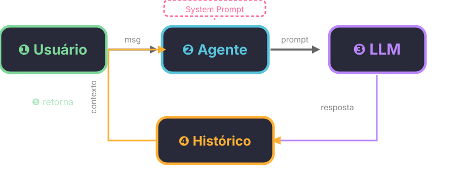

Continuação: De APIs para Agentes
Nas semanas passadas, aprendemos Python básico (Python Mínimo) e como chamar APIs de LLM (Python + API de LLM). Vimos que um modelo de linguagem responde a uma pergunta — e nada mais.
Mas um agente é mais que isso. Um agente:
- Lembra da conversa (memória)
- Tem personalidade (instruções de sistema)
- Pode usar ferramentas (extensões — veremos na S06)
Nesta aula, vamos construir um agente do zero: primeiro "na mão" com requests, depois com LangChain.
O que é um Agente?
Agente = LLM + harness. O LLM é o cérebro; o harness é a estrutura em volta que dá contexto e continuidade — memória, instruções, e (mais tarde) ferramentas.
Um LLM puro responde uma pergunta e esquece. Um agente mantém um histórico de conversa e segue instruções de sistema que definem seu comportamento.
O termo harness (armação, arreio) é usado na indústria pra descrever o código que envolve o LLM: system prompt, gerenciamento de memória, parsing de ferramentas, loop de execução. É o que transforma um modelo que só responde num sistema que conversa e age.
Componentes de um Agente
- System Prompt — define quem o agente é, como age, suas regras
- Memória (Histórico) — as mensagens trocadas até agora
- Input — a pergunta atual do usuário
- Output — a resposta do modelo

Paradigma ReAct: Pensar e Agir
Até agora, nosso código faz uma pergunta e recebe uma resposta. Mas agentes reais pensam e agem em ciclos.
O paradigma ReAct (Reasoning + Acting), proposto por Yao et al. (2022), intercala raciocínio com ação:
Input → Thought → Action → Observation → Thought → Answer
Exemplo de trace ReAct:
Pergunta: Quanto é 234 × 987 + 100? Thought: Preciso multiplicar 234 por 987 primeiro. Action: calculadora[234 * 987] Observation: 230958 Thought: Agora somo 100 ao resultado. Action: calculadora[230958 + 100] Observation: 231058 Thought: Tenho a resposta final. Answer: O resultado é 231058.
Vantagens:
- Interpretabilidade: vemos o raciocínio passo a passo
- Debug facilitado: conseguimos identificar onde o agente errou
- Comporabilidade: ações podem ser encadeadas
Nesta aula, vamos implementar a estrutura do agente (memória + instruções). Na S06, vamos adicionar ferramentas — e então o ciclo ReAct vai ficar completo.
Para saber mais
- Yao, S. et al. (2022). "ReAct: Synergizing Reasoning and Acting in Language Models". arXiv:2210.03629
- Liu, N.F. et al. (2023). "Lost in the Middle: How Language Models Use Long Contexts". arXiv:2307.03172
- Weng, L. (2023). "LLM Powered Autonomous Agents". lilianweng.github.io
- Wang et al. (2023). "Plan-and-Solve Prompting". arXiv:2305.16969
Agente na Mão: Dicts e Funções
Começamos com o que já sabemos: requests.post() para chamar o Ollama, e dicionários para guardar o estado.
Criando o agente
def criar_agente(instrucoes, max_historico=20): return { "instrucoes": instrucoes, "historico": [], "max_historico": max_historico }
Um dicionário simples. Sem classes, sem objetos — só funções e dicts.
Conversando com o agente
import requests def conversar(agente, mensagem): # Monta a lista de mensagens messages = [{"role": "system", "content": agente["instrucoes"]}] # Adiciona o histórico for msg in agente["historico"]: messages.append(msg) # Adiciona a mensagem atual messages.append({"role": "user", "content": mensagem}) # Chama o Ollama via endpoint OpenAI-compatible response = requests.post( "http://localhost:11434/v1/chat/completions", json={ "model": "gemma4:e2b", "messages": messages, "stream": False } ) resposta = response.json()["choices"][0]["message"]["content"] # Salva no histórico agente["historico"].append({"role": "user", "content": mensagem}) agente["historico"].append({"role": "assistant", "content": resposta}) return resposta
Testando
agente = criar_agente("Você é um assistente amigável que responde em português.") print(conversar(agente, "Oi! Meu nome é Ana.")) print(conversar(agente, "Qual é o meu nome?")) # Lembra!
O agente lembra do nome porque guardamos o histórico.
O Problema do Histórico Infinito
Se a conversa crescer demais, o prompt fica gigante — e isso custa tokens e fica lento.
Solução: limitar o histórico
def conversar(agente, mensagem): # Monta a lista de mensagens messages = [{"role": "system", "content": agente["instrucoes"]}] # Pega só as últimas N mensagens do histórico limite = agente["max_historico"] historico_cortado = agente["historico"][-limite:] for msg in historico_cortado: messages.append(msg) messages.append({"role": "user", "content": mensagem}) # Chama o Ollama via endpoint OpenAI-compatible response = requests.post( "http://localhost:11434/v1/chat/completions", json={ "model": "gemma4:e2b", "messages": messages, "stream": False } ) resposta = response.json()["choices"][0]["message"]["content"] # Salva no histórico agente["historico"].append({"role": "user", "content": mensagem}) agente["historico"].append({"role": "assistant", "content": resposta}) return resposta
Agora garantimos que o prompt nunca ultrapassa max_historico mensagens do passado.
Mas e compactação?
Truncar funciona, mas joga fora informação. Na prática, a solução mais robusta é compactação — pedir ao próprio LLM pra resumir o histórico antes de enviar. Isso também mitiga o problema lost in the middle: LLMs têm dificuldade em recuperar informação que está no meio de um contexto longo (Liu et al., 2023 — "Lost in the Middle: How Language Models Use Long Contexts").
Compactação precisa de ferramentas (que ainda não cobrimos no curso). Por ora, truncar resolve o problema imediato.
De Requests para LangChain
Montar mensagens na mão funciona, mas é repetitivo. LangChain é uma biblioteca que abstrai esse trabalho:
| O que fazemos na mão | O que LangChain faz |
|---|---|
Montar lista de messages |
ChatPromptTemplate organiza tudo |
| Adicionar histórico manualmente | InMemoryChatMessageHistory (tipado, mesma lógica) |
| Chamar API e parsear JSON | ChatOpenAI via endpoint OpenAI-compatible |
| Limitar histórico | Configurável em max_historico |
O padrão fundamental do LangChain moderno é o pipe (|):
cadeia = prompt | llm resultado = cadeia.invoke({"pergunta": "..."})
Prompt entra, LLM sai. Simples assim.
ChatOpenAI: endpoint OpenAI-compatible
O Ollama fornece um endpoint compatível com a API da OpenAI em /v1/chat/completions.
Com ChatOpenAI do langchain-openai, a gente usa esse endpoint direto —
mesmo modelo local, sem enviar nada pra nuvem.
Por que
ChatOpenAIe nãoChatOllama? OChatOllamaexiste, mas o endpoint OpenAI-compatible é mais universal: funciona com Ollama, com qualquer servidor vLLM/TGI, e com APIs comerciais (Gemini, OpenAI). É o padrão da indústria — aprender assim te prepara pra trocar de provedor mudando uma linha.
from langchain_openai import ChatOpenAI llm = ChatOpenAI( model="gemma4:e2b", base_url="http://localhost:11434/v1", api_key="nao_precisa", # Ollama local não usa chave temperature=0.7 )
Mesma infra do Ollama que já conhecemos — mas agora com interface do LangChain.
Chat com Memória
O LLM não lembra de nada sozinho — cada chamada é independente. Para ter memória, guardamos o histórico de mensagens e enviamos junto a cada chamada.
A LangChain oferecia
RunnableWithMessageHistory(deprecated no v0.3). A abordagem recomendada agora? Gerenciar o histórico explicitamente — que é exatamente o que fizemos na seção "Agente na Mão", só que com objetos tipados do LangChain.
from langchain_core.chat_history import InMemoryChatMessageHistory from langchain_core.messages import HumanMessage, AIMessage from langchain_core.prompts import ChatPromptTemplate # Sessão com histórico (sem gerenciamento de sessões — uma variável simples) session = InMemoryChatMessageHistory() # Prompt com placeholder para o histórico prompt_mem = ChatPromptTemplate.from_messages([ ("system", "Você é um assistente amigável que responde em português."), ("placeholder", "{history}"), ("human", "{pergunta}") ]) cadeia_mem = prompt_mem | llm # Primeira mensagem — histórico vazio r1 = cadeia_mem.invoke({ "pergunta": "Meu nome é Ana e eu estudo engenharia.", "history": session.messages }) print(f"🤖 {r1.content}") # Salva no histórico session.add_message(HumanMessage(content="Meu nome é Ana e eu estudo engenharia.")) session.add_message(AIMessage(content=r1.content)) # Segunda mensagem — o modelo lembra do nome! r2 = cadeia_mem.invoke({ "pergunta": "Qual é o meu nome e o que eu estudo?", "history": session.messages }) print(f"🤖 {r2.content}") session.add_message(HumanMessage(content="Qual é o meu nome e o que eu estudo?")) session.add_message(AIMessage(content=r2.content)) # Sessão zerada = sem memória session_nova = InMemoryChatMessageHistory() r3 = cadeia_mem.invoke({ "pergunta": "Qual é o meu nome?", "history": session_nova.messages # histórico vazio! }) print(f"🤖 {r3.content}") print("👉 Na sessão nova o modelo não sabe nosso nome!")
Comparação: Na Mão vs LangChain
| Aspecto | Com requests |
Com LangChain |
|---|---|---|
| Setup | 15+ linhas | 5 linhas |
| System prompt | Montar dict manual | ChatPromptTemplate organiza tudo |
| Memória | Gerenciar lista manual | InMemoryChatMessageHistory + session.messages |
| Trocar modelo | Mudar URL e payload | Trocar base_url / model em ChatOpenAI |
| Limitar histórico | [-N:] manual |
Configurável |
LangChain não é mágica — por baixo, ela faz o que fazemos na mão. Mas abstrair isso facilita, surtout quando adicionamos ferramentas (na S06).
Diagrama do Ciclo

- Usuário envia mensagem
- Agente monta prompt com histórico + instruções
- LLM processa
- Resposta salva no histórico
- Retorna ao usuário
- Na próxima rodada, o histórico cresce
Pitfalls Comuns
1. Histórico que cresce para sempre
Se não limitar, o prompt fica gigante e custa caro.
# ERRADO — histórico cresce sem limite historico.append(mensagem) # CERTO — limite definido if len(historico) > MAX: historico = historico[-MAX:]
2. Memória não persistida
O histórico fica na memória RAM. Se reiniciar o programa, perde tudo. Solução futura: salvar em arquivo ou banco de dados.
3. System prompt vago
# ERRADO — vago demais instrucoes = "Responda perguntas." # MELHOR — específico instrucoes = """Você é um tutor de Python para iniciantes. REGRAS: - Responda em português - Use exemplos de código - Se não souber, diga que não sabe - Nunca invente informações """
Para Lembrar
"Agente = LLM com memória e personalidade. O ReAct completa o ciclo: pensar e agir."
Na S06, vamos dar ferramentas para o agente — e o ciclo ReAct (input → thought → action → observation → answer) vai ganhar vida.
Exercícios
Exercício 1: Agente com Personalidade
Crie um agente com uma personalidade específica (professor de Python, assistente de receitas, guia de viagem):
agente = criar_agente("""Você é um professor de Python paciente e didático. SOBRE VOCÊ: - Ensina Python para iniciantes - Usa exemplos práticos - Explica conceitos de forma simples - Nunca julga perguntas "burras" SEU PÚBLICO: - Pessoas começando a programar - Precisam de explicações passo a passo """) print(conversar(agente, "O que é uma variável?")) print(conversar(agente, "Como declaro uma lista?"))
Exercício 2: Memória com Limite
Modifique criar_agente para aceitar um max_historico e teste o que acontece quando o histórico ultrapassa o limite. O agente "esquece" as mensagens mais antigas?
Exercício 3: Dois Agentes, Duas Personalidades
Crie dois agentes com personalidades diferentes e compare as respostas:
agente_formal = criar_agente("Você é um assistente formal e objetivo.") agente_criativo = criar_agente("Você é um assistente criativo e divertido.") pergunta = "Me conte uma piada sobre programação." print("FORMAL:", conversar(agente_formal, pergunta)) print("CRIATIVO:", conversar(agente_criativo, pergunta))
Próxima Aula
Semana 06: Primeira Ferramenta — vamos dar ao agente a capacidade de usar ferramentas externas (calculadora, busca, etc.). É aí que o ciclo ReAct se completa: pensar, agir, observar, responder.